1
Google ビジネス プロフィールにログインします。
管理者権限をお持ちのオーナーアカウントでログインしてください。
このページは、FoodLuck MEO の運用開始にあたり、お客さまにお願いする設定とログイン情報のご共有を一つにまとめたものです。上から順にご対応いただき、最後のチェックリストでご確認ください。
ご契約状況によって対象外の項目（任意のSNS・グルメサイト等）がある場合は、対応不要です。ご不明な点は FoodLuck 担当・小島 までお気軽にお知らせください。
FoodLuck を「管理者」として追加します。追加できるのはオーナーのみです。
管理者権限をお持ちのオーナーアカウントでログインしてください。
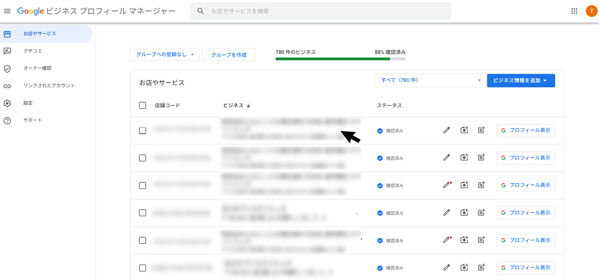
一覧から、管理者を追加したい店舗（ビジネス）をクリックします。
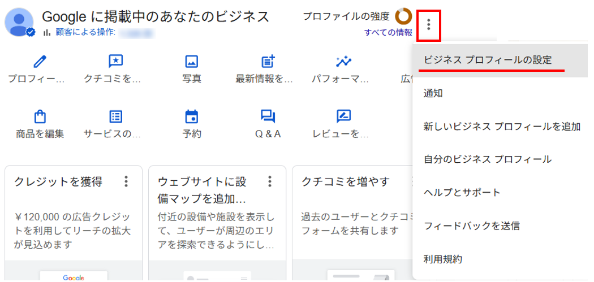
画面右上の「⋮」（その他）→ 「ビジネス プロフィールの設定」の順に選びます。
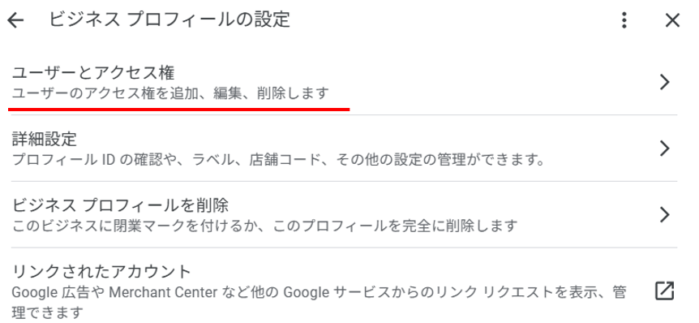
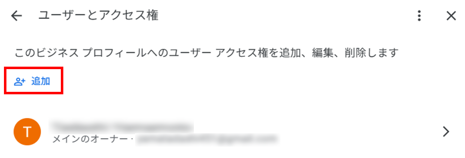
「＋ 追加」をクリックします。
下記の FoodLuck のメールアドレス を入力し、アクセス権で「管理者」を選択してから「招待する」を押すと、相手に招待メールが届きます。
設定後、FoodLuck 側で運用アカウント「kojima@foodluck.tokyo」を追加し、メインの運用はこちらで行います。n0riaki1977@gmail.com はバックアップとして使用します。
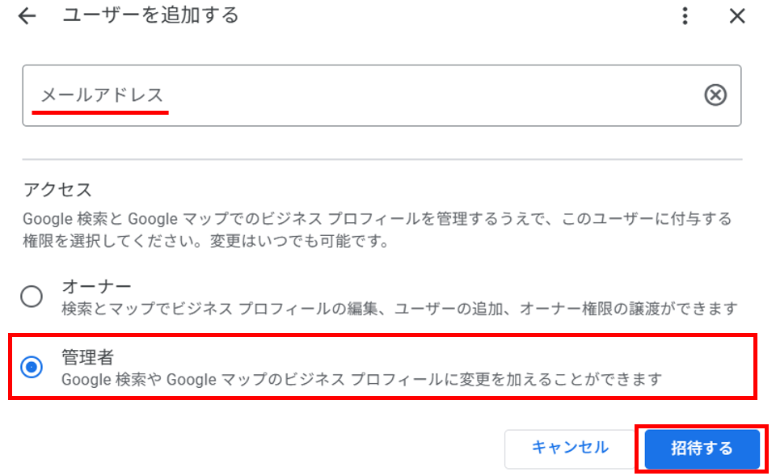
招待メールが承認されると、新しいユーザーが管理者として追加されます。これで設定は完了です。
詳細な点については、お手数ですが実際の Google ガイドラインをご確認ください。
ビジネスのオーナーと管理者を追加、削除する（Google ヘルプ）Meta Business Suite から FoodLuck を「全権限」で追加します。管理権限をお持ちの方のみ操作できます。
管理権限をお持ちのアカウントでログインし、対象のFacebookページの管理画面を開きます。
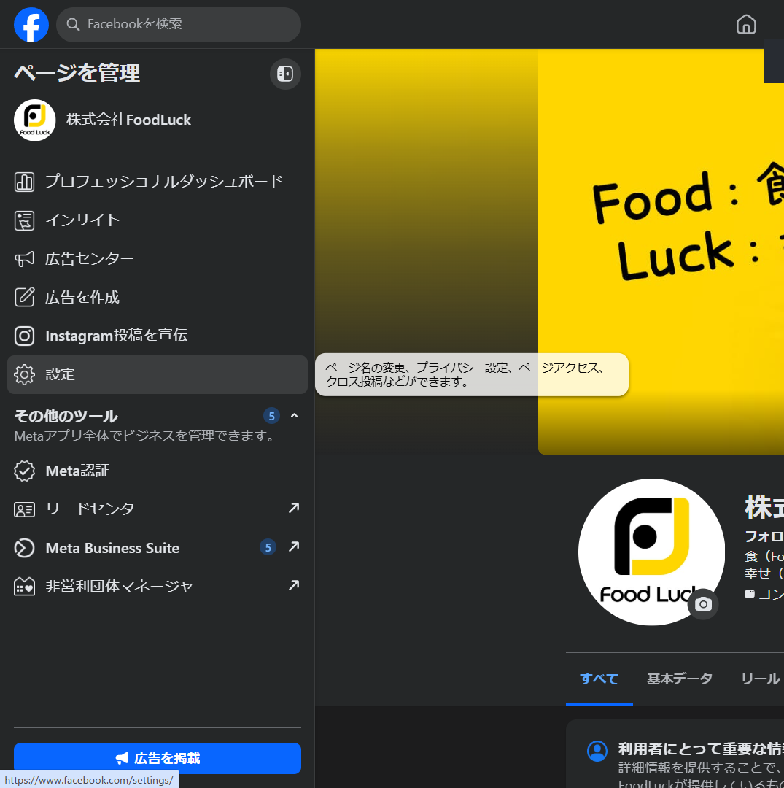
左メニュー下部の「設定」をクリックします。
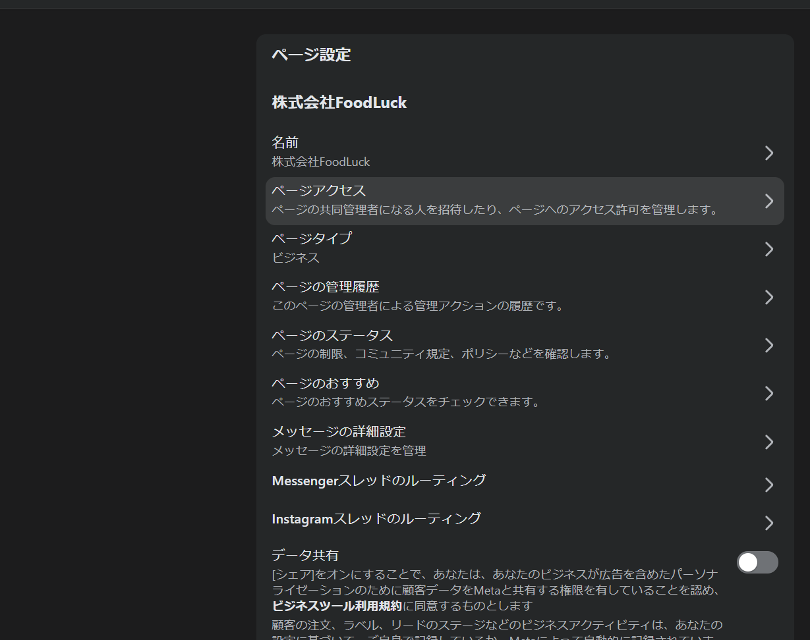
「ページアクセス」を選びます。ページの共同管理者の招待やアクセス許可を管理する画面です。
ユーザーとアクセス権は Meta Business Suite（ビジネスポートフォリオ） でまとめて管理します。
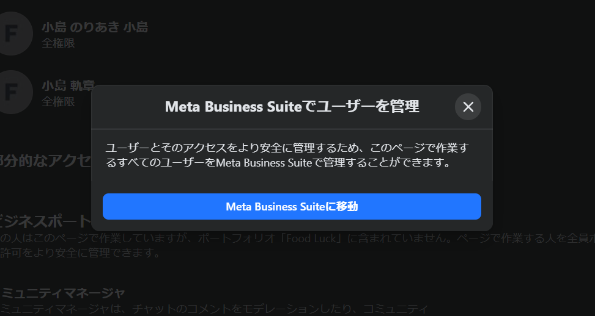
案内ダイアログの「Meta Business Suiteに移動」を押します。
移動すると、Facebookページに割り当てられているユーザー（管理者）の一覧が表示されます。新しく追加するには、左メニューの「ユーザー」→「メンバーを招待」へ進みます。
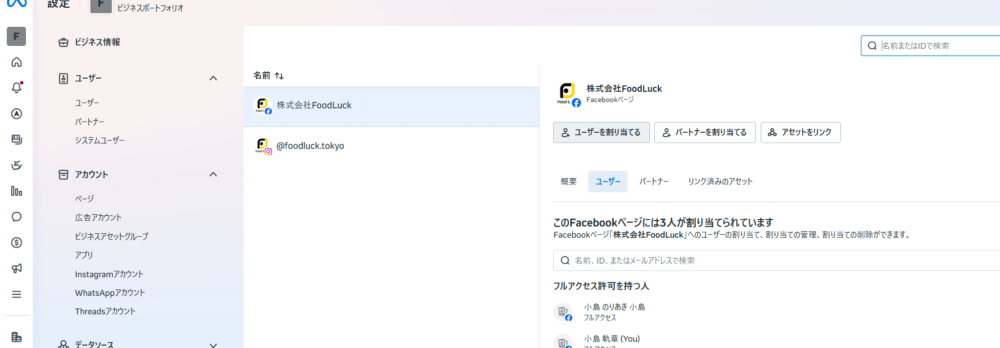
現在の管理者は「フルアクセス許可を持つ人」で確認できます。
Meta Business Suite の「ユーザー」から「メンバーを招待」を開き、下記の FoodLuck のメールアドレス を入力します。
設定後、FoodLuck 側で運用アカウント「kojima@foodluck.tokyo」を追加し、メインの運用はこちらで行います。n0riaki1977@gmail.com はバックアップとして使用します。
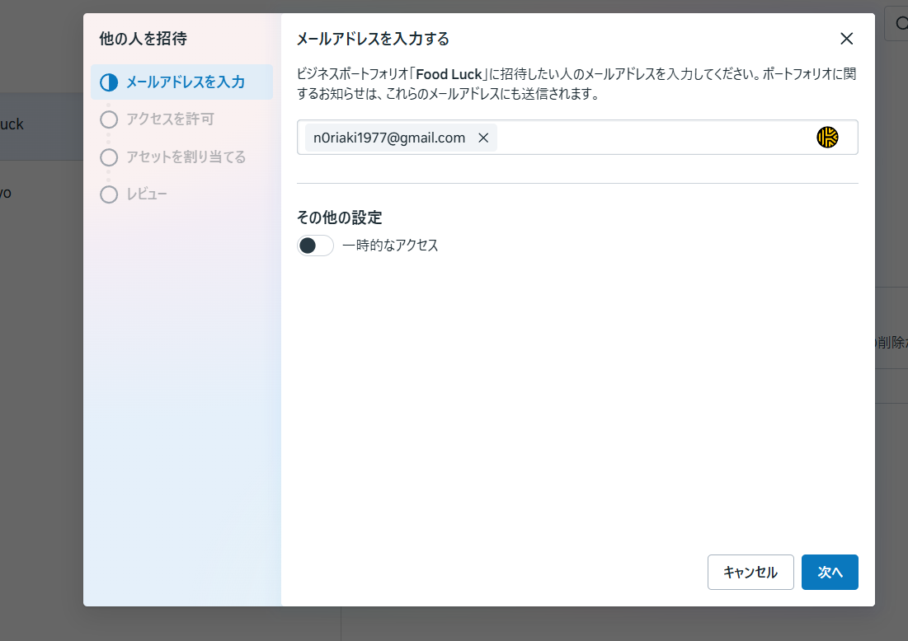
「一時的なアクセス」はオフのまま、「次へ」を押します。
「全権限」の「管理する」をオンにします。ページの連携や各種設定を FoodLuck 側で行うために必要です。
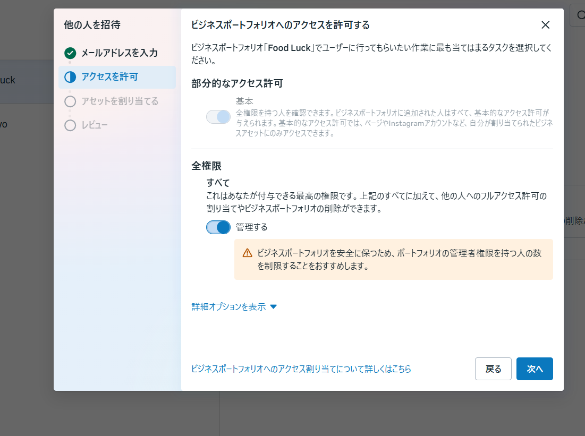
ラジオが濃い青色になっていれば選択済みです。「次へ」を押します。
プルダウンから、対象のFacebookページと Instagram アカウントにチェックを入れます。
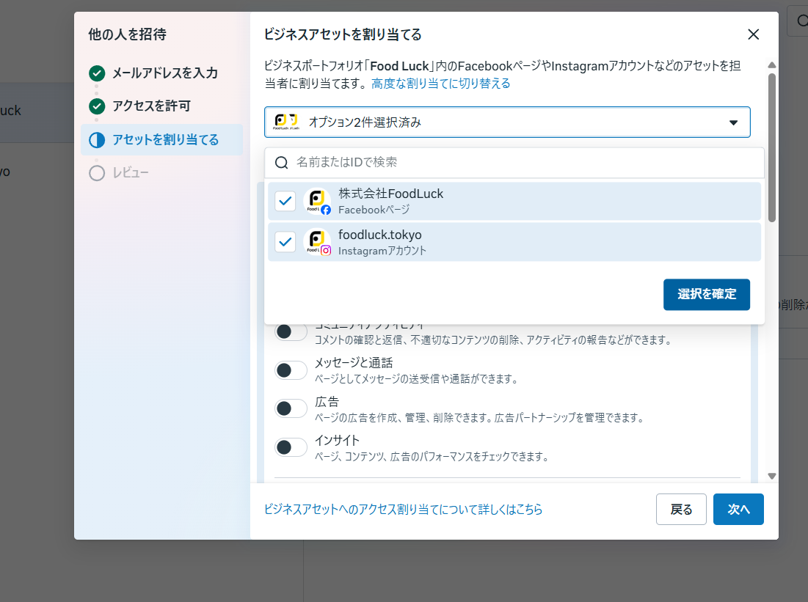
チェックを入れたら「選択を確定」を押します。
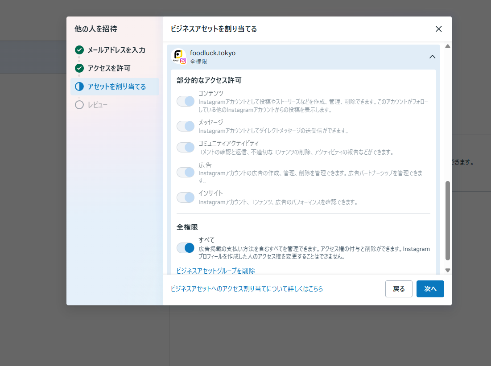
Facebookページ・Instagram それぞれで「全権限（すべて）」をオンにし、「次へ」を押します。
招待先のメールアドレスと、割り当てるアセットを確認します。問題なければ「招待」を押します。
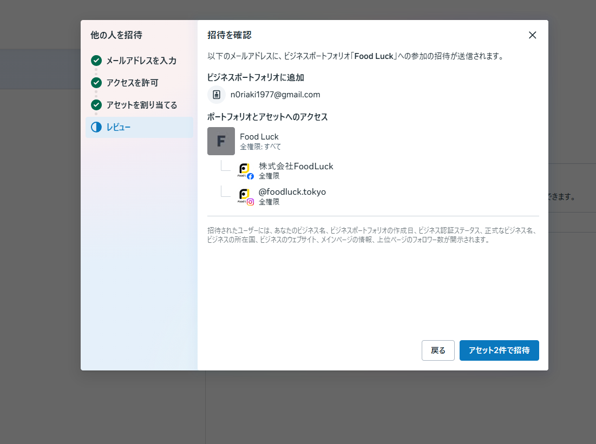
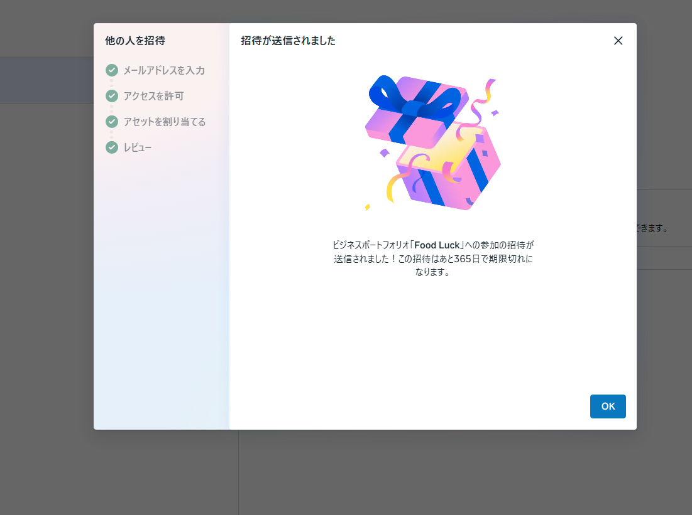
招待先に招待メールが届きます。相手が承認すると、管理者として追加が完了します。※招待の有効期限は、送信から365日です。
画面のデザインや名称は Meta 側の更新により変わる場合があります。詳細は実際の Meta ガイドラインをご確認ください。
ビジネスポートフォリオにメンバーを追加してビジネスアセットを割り当てる（Meta ヘルプ）運用に必要なログイン情報をご共有ください。Instagram・食べログは必須、その他はご契約の方のみで構いません。
Instagram は必須です。X はご契約の方のみご共有ください。
FoodLuck MEO をご利用のすべての店舗さまにご共有をお願いします。
2段階認証を設定されている場合は、その旨をお知らせください。承認手続きをご案内します。
X の運用をご契約いただいている店舗さまのみご共有ください。
食べログは原則必須です。ぐるなび・ホットペッパーはご契約の方のみで構いません。
店舗管理画面（店舗会員ページ）のログイン情報をご共有ください。
ぐるなびをご契約いただいている店舗さまのみご共有ください。
ホットペッパーをご契約いただいている店舗さまのみご共有ください。
下記がすべて完了・ご共有されると、FoodLuck MEO の初期設定を開始できます。ご契約状況により「任意」の項目は対応不要です。
ログイン情報は、FoodLuck 担当・小島 への直接メッセージにてお送りください。普段ご連絡いただいている方法で結構です。